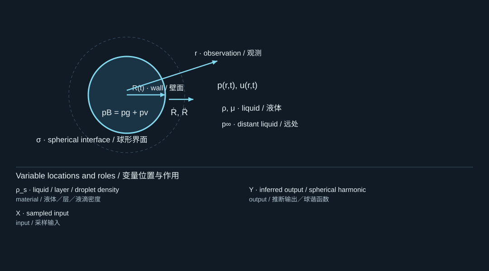
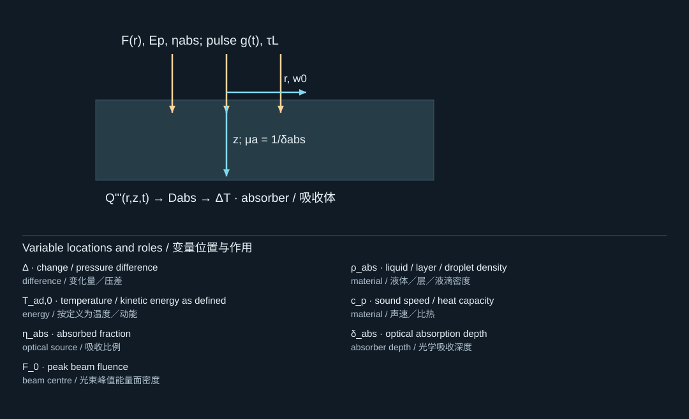
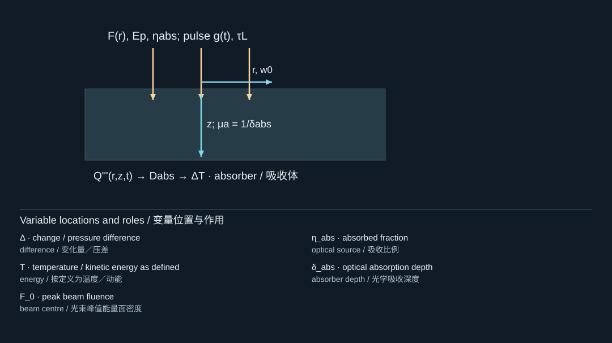
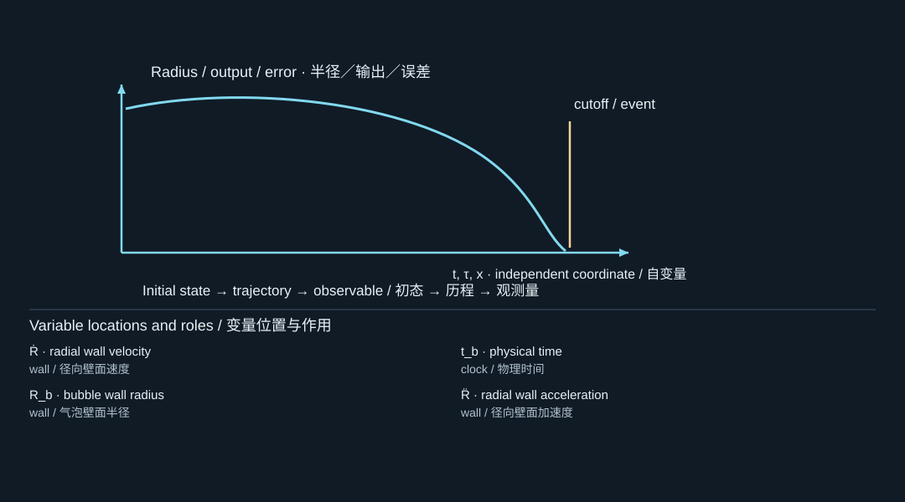
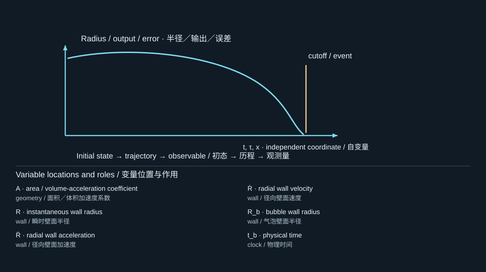
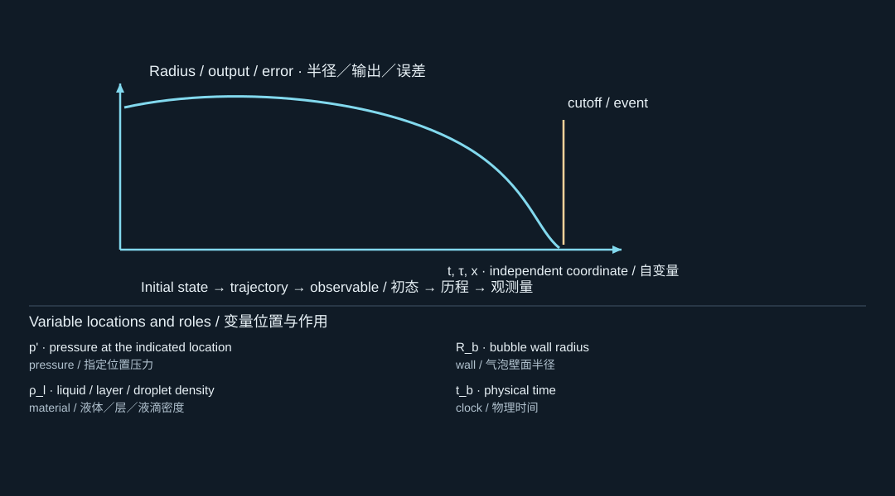
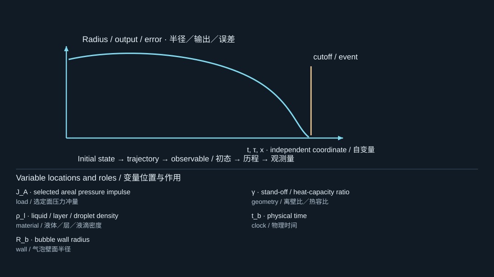
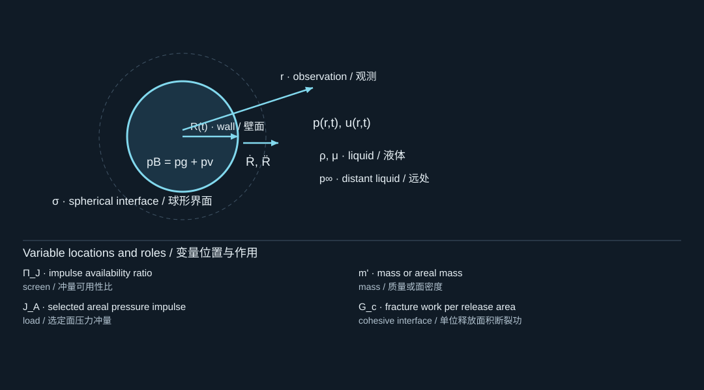
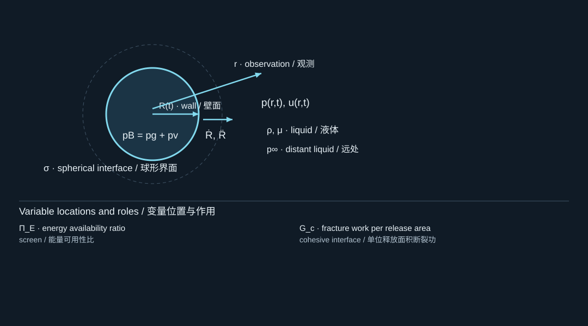
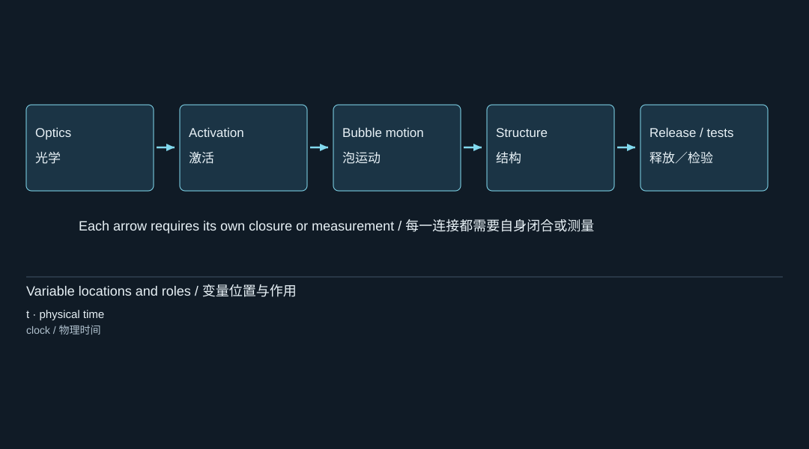

5. Sensitivity and the next measurements
敏感性与下一步测量
What the theory tells us to measure next. Corresponding to Theory 05, source page 5.
理论告诉我们下一步应测量什么。对应 Theory 05，原始材料第5页。
The final page uses the calculations to prioritize uncertain inputs rather than to declare a validated transfer threshold. Its reported rankings are calculation-only Spearman correlations. [S1, p. 5]
最后一页利用计算结果对不确定输入进行优先级排序，而不是宣称已经得到经验证的转印阈值。其中报告的排序仅来自计算所得的 Spearman 秩相关。[S1，第5页]
5.1 What a Spearman ranking measures
Spearman 排序衡量什么
For sampled inputs and outputs ,
对于抽样得到的输入 和输出 ，

The diagram locates the physical system; its key lists the symbols in the formula. Read the definition in the surrounding derivation when a letter has different roles.
图示标出物理体系，图例列出公式中的符号。若某字母有多种作用，应以邻近推导中的定义为准。
It measures whether larger input values tend to accompany larger or smaller outputs. It is not a governing equation, and its magnitude depends on the sampled ranges and assumptions.
它衡量的是：较大的输入值是否倾向于对应较大或较小的输出值。它不是控制方程，其数值大小取决于抽样范围与相关假设。
The directions of several reported relationships can nevertheless be understood from the equations we derived.
不过，原始材料报告的若干关系，其正负方向可以通过已经推导出的方程来理解。
5.2 Optical sensitivity follows directly from the temperature scale
光学敏感性直接来自温升尺度
From
由

The diagram locates the physical system; its key lists the symbols in the formula. Read the definition in the surrounding derivation when a letter has different roles.
图示标出物理体系，图例列出公式中的符号。若某字母有多种作用，应以邻近推导中的定义为准。
take logarithms:
两边取对数：
The diagram locates the physical system; its key lists the symbols in the formula. Read the definition in the surrounding derivation when a letter has different roles.
图示标出物理体系，图例列出公式中的符号。若某字母有多种作用，应以邻近推导中的定义为准。
Holding the other quantities fixed,
保持其他量不变，可得

The diagram locates the physical system; its key lists the symbols in the formula. Read the definition in the surrounding derivation when a letter has different roles.
图示标出物理体系，图例列出公式中的符号。若某字母有多种作用，应以邻近推导中的定义为准。
This explains the positive fluence/absorption dependence and negative absorption-depth dependence in the source’s ranking. It does not reconstruct the numerical rank coefficients without the original uncertainty samples. [S1, p. 5]
这解释了原始材料排序中，温升与能量面密度、吸收比例的正相关，以及与吸收深度的负相关。但如果没有原始不确定性样本，就不能据此复现具体的秩相关系数。[S1，第5页]
5.3 Bubble-load sensitivity follows from acceleration scaling
气泡载荷敏感性来自加速度尺度
For comparable dimensionless trajectories with characteristic radius and time ,
对于无量纲形状相近、特征半径为 、特征时间为 的轨迹，

The diagram locates the physical system; its key lists the symbols in the formula. Read the definition in the surrounding derivation when a letter has different roles.
图示标出物理体系，图例列出公式中的符号。若某字母有多种作用，应以邻近推导中的定义为准。
Consequently,
因此

The diagram locates the physical system; its key lists the symbols in the formula. Read the definition in the surrounding derivation when a letter has different roles.
图示标出物理体系，图例列出公式中的符号。若某字母有多种作用，应以邻近推导中的定义为准。
At fixed observation distance , the leading pressure scale is
在观测距离 固定时，主导压力尺度为

The diagram locates the physical system; its key lists the symbols in the formula. Read the definition in the surrounding derivation when a letter has different roles.
图示标出物理体系，图例列出公式中的符号。若某字母有多种作用，应以邻近推导中的定义为准。
and a corresponding impulse scale is
相应的冲量尺度为
The diagram locates the physical system; its key lists the symbols in the formula. Read the definition in the surrounding derivation when a letter has different roles.
图示标出物理体系，图例列出公式中的符号。若某字母有多种作用，应以邻近推导中的定义为准。
If stand-off ratio is held fixed instead, so ,
如果保持不变的是距壁比，即 ，则

The diagram locates the physical system; its key lists the symbols in the formula. Read the definition in the surrounding derivation when a letter has different roles.
图示标出物理体系，图例列出公式中的符号。若某字母有多种作用，应以邻近推导中的定义为准。
These are explanatory scalings, not substitutes for the disk-average calculation. They show why larger bubbles and shorter motion times tend to increase loading, while also showing that “sensitivity to radius” depends on which geometric quantities are held fixed.
这些属于解释性的尺度关系，不能替代圆盘平均压力计算。它们说明了为什么更大的气泡和更短的运动时间往往会增大载荷，同时也表明，“对半径的敏感性”取决于哪些几何量被保持不变。
The source’s calculated ranking identifies and boundary gain as strong positive influences on growth impulse, and growth time as a negative influence. [S1, p. 5]
原始材料的计算排序表明， 和边界增益对增长阶段冲量具有较强的正向影响，而增长时间具有负向影响。[S1，第5页]
5.4 Interface toughness enters the availability ratios explicitly
界面韧度显式进入可用性比值
For fixed impulse and mass,
当冲量与质量固定时，

The diagram locates the physical system; its key lists the symbols in the formula. Read the definition in the surrounding derivation when a letter has different roles.
图示标出物理体系，图例列出公式中的符号。若某字母有多种作用，应以邻近推导中的定义为准。
For fixed modal energy and release area,
当模态能量与释放面积固定时，

The diagram locates the physical system; its key lists the symbols in the formula. Read the definition in the surrounding derivation when a letter has different roles.
图示标出物理体系，图例列出公式中的符号。若某字母有多种作用，应以邻近推导中的定义为准。
Thus a larger nominal fracture energy decreases both availability ratios. This is consistent with the negative toughness ranking reported for the release surrogate, while remaining conditional on the particular screening calculation. [S1, p. 5]
因此，更大的名义断裂能会使两个可用性比值都减小。这与原始材料中释放替代量对韧度呈负相关的排序一致，但仍然以具体筛查计算的假设为条件。[S1，第5页]
5.5 Why the measurement order matters
为什么测量顺序很重要
The source proposes the following order:
原始材料提出了如下顺序：

The diagram locates the physical system; its key lists the symbols in the formula. Read the definition in the surrounding derivation when a letter has different roles.
图示标出物理体系，图例列出公式中的符号。若某字母有多种作用，应以邻近推导中的定义为准。
This order follows the direction of the model dependencies. [S1, p. 5]
这一顺序遵循模型之间的依赖方向。[S1，第5页]
For example, fitting interface toughness while the incident pressure is unknown allows the toughness parameter to compensate for an incorrect loading amplitude. A successful displacement fit would then not identify the true interface property.
例如，在入射压力未知的情况下拟合界面韧度，就可能使韧度参数去补偿错误的载荷幅值。这样一来，即使成功拟合了位移，也不能说明识别出了真实的界面性质。
Likewise, obtaining the correct absorbed energy does not identify activation coefficients, and choosing an bubble does not establish that the laser will generate one. The source explicitly warns against using downstream parameters to compensate for unknown upstream inputs. [S1, p. 5]
同样，得到正确的吸收能量并不意味着识别出了激活系数；选取一个 的气泡，也不能证明激光会产生这样的气泡。原始材料明确提醒，不应利用下游参数去补偿未知的上游输入。[S1，第5页]
![The complete picture / 完整图景; F: force / fluence; r: liquid observation radius / embryo radius; g: temporal pulse profile / wall gap; t: physical time; μ_a: optical absorption coefficient; Q''': volumetric heat deposition rate; x: position / dimensionless radius; D_abs: absorbed dose per unit volume; E_abs: total absorbed energy; p: pressure at the indicated location; q̇'''_max: peak volumetric deposition rate; p_1: single-droplet true-event probability; P_ge1: at least one true event; P_det: detected-event probability; R: instantaneous wall radius; Ṙ: radial wall velocity; R̈: radial wall acceleration; p': pressure at the indicated location; q: heat flux / mode displacement](../../assets/curriculum-figures/formula-e40fc05f2997705f.svg)